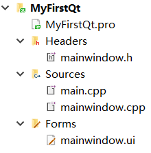
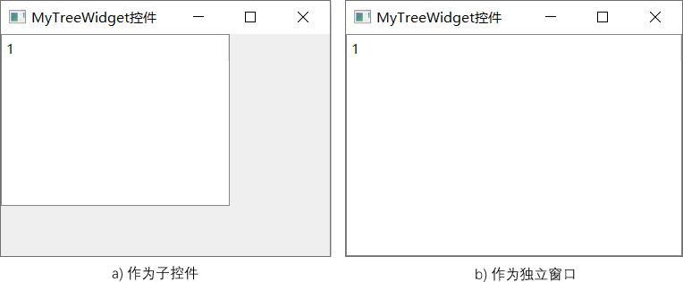
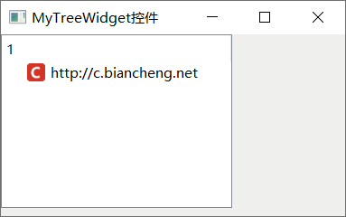
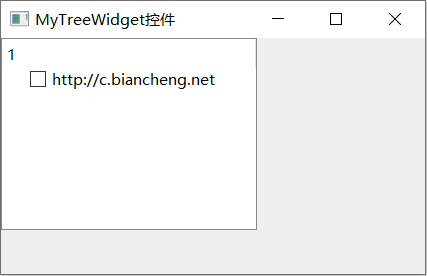
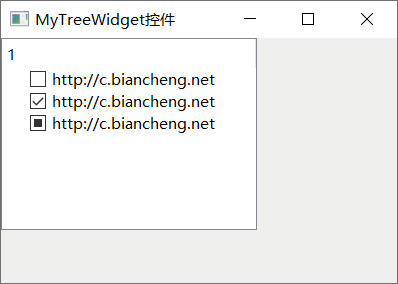
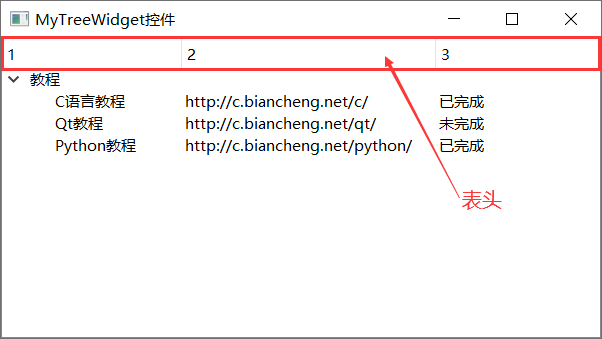
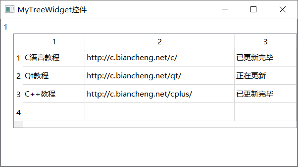
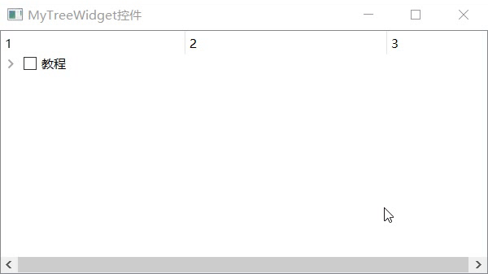

首页 > 编程笔记
Qt QTreeWidget树形控件用法详解
QTreeWidget 是 Qt 框架提供的一种树形控件，它能以树形结构展示数据（或者文件）之间的包含关系。举个简单的例子，下图是我们创建好的一个 Qt 项目：
图 1 是树形结构的一个典型示例，MyFirstQt 项目的内部构成一目了然，项目内部包含一个 MyFirstQt.pro 项目文件和 3 个文件夹，每个文件夹中包含哪些文件也都可以清楚地看到。
作为一款成熟的 GUI 框架，Qt 提供了 QTreeWidget 树形控件，专门用来以树形结构显示数据。
QTreeWidget 类只提供了 1 个构造函数：
QTreeWidget 可以看作“简易版”或“升级版”的 QTreeView，前者的使用方式更加简单，入门门槛低，对于刚刚接触 Qt 的初学者，我建议先学习 QTreeWidget 控件。
作为简易版的 QTreeView，QTreeWidget 仅适用于构建简单的树形结构，当实际场景中需要构建数据量大、结构复杂的树形结构时，还是应该选择 QTreeView。
使用 QTreeWidgetItem 类创建结点之前，项目中需引入
结合表 1 和表 2 罗列的这些成员方法，接下来给大家介绍一些实际场景中 QTreeWidget 控件的用法，它们都非常实用，每位读者都应该掌握。
同样，为某个结点添加子结点的方法也有两种，分别是：
除此之外，还有其它添加结点的方法，例如使用
【实例一】
对比图 3 和图 4 不难发现，之前放置 icon 的位置被一个方框占据了。这个方框是可以被选择的，而且当同时存在多个方框时，用户可以根据需要选择性地选中多个方框，这样的方框称为复选框。
默认情况下，QTreeWidgetItem 结点不显示复选框，通过调用 setCheckState() 方法，可以使结点自带的复选框显现出来。复选框的状态有 3 种，如下图所示：
【实例二】
默认情况下，每一列的表头是当前列的列号。必要的时候，我们还可以指定每一列的表头。例如：
此外，QTreeWidget 控件默认会显示每一列的表头，通过调用从 QTreeView 父类继承过来的 setHeaderHidden() 方法，可以将表头隐藏起来。例如：
QTreeWidget 类提供有 setItemWidget() 方法，可以将其它控件添加到指定列的结点中：
举个例子：

图 1 树形结构
图 1 是树形结构的一个典型示例，MyFirstQt 项目的内部构成一目了然，项目内部包含一个 MyFirstQt.pro 项目文件和 3 个文件夹，每个文件夹中包含哪些文件也都可以清楚地看到。
作为一款成熟的 GUI 框架，Qt 提供了 QTreeWidget 树形控件，专门用来以树形结构显示数据。
QTreeWidget控件的创建
QTreeWidget 类专门用来创建树形控件，使用此类前需在项目中引入<QTreeWidget>头文件。QTreeWidget 类只提供了 1 个构造函数：
QTreeWidget(QWidget *parent = Q_NULLPTR)
parent 参数用于为新建树形控件指定父窗口。当为新建 QTreeWidget 对象指定父窗口后，它将作为该窗口中的一个控件（如图 2a) ）；反之，新建 QTreeWidget 控件将作为一个独立的窗口（如图 2b) ）。

图 2 MyTreeWidget控件
举个例子：
图 2 MyTreeWidget控件
//① 独立的树形窗口,对应图 2b) QTreeWidget treeWidget; //② 树形控件，作为 widget 窗口上的一个子控件，对应图 2a) QWidget widget; QTreeWidget treeWidget(&widget);由于我们尚未指定 QTreeWidget 新控件要显示的数据内容，因此初始状态下的 QTreeWidget 控件如图 2 所示，不包含任何内容。图 2 中显示的数字 1，是 QTreeWidget 控件中的表头，默认情况下 QTreeWidget 只有一个表头，表头的内容就是 1。
QTreeWidget\QTreeView的关系和区别
QTreeWidget 类继承自 QTreeView 类，QTreeView 类也可以用来创建树形控件。QTreeWidget 可以看作“简易版”或“升级版”的 QTreeView，前者的使用方式更加简单，入门门槛低，对于刚刚接触 Qt 的初学者，我建议先学习 QTreeWidget 控件。
作为简易版的 QTreeView，QTreeWidget 仅适用于构建简单的树形结构，当实际场景中需要构建数据量大、结构复杂的树形结构时，还是应该选择 QTreeView。
QTreeWidgetItem类
通常情况下，我们习惯将树形结构中的每份数据称为一个结点。QTreeWidget 控件中，每个结点都是 QTreeWidgetItem 类的实例对象。也就是说，QTreeWidget 类对象代表整个树形控件，而 QTreeWidgetItem 类对象代表树形控件中的结点。使用 QTreeWidgetItem 类创建结点之前，项目中需引入
<QTreeWidgetItem>头文件。QTreeWidgetItem 类提供的构造函数有很多，常用的有如下几个：
//创建一个新结点，设置结点中包含的数据（strings），将该结点添加到指定的 parent 树形结构中 QTreeWidgetItem(QTreeWidget *parent, const QStringList &strings, int type = Type) //创建一个新结点，将其插入到 parent 树形结构中 preceding 结点之后的位置 QTreeWidgetItem(QTreeWidget *parent, QTreeWidgetItem *preceding, int type = Type) //创建一个新结点，将其添加到指定 parent 结点中，作为 parent 结点的子结点 QTreeWidgetItem(QTreeWidgetItem *parent, int type = Type) //创建一个新结点，指定结点中包含的文本内容（strings），将其添加到指定 parent 结点中，作为 parent 的子结点 QTreeWidgetItem(QTreeWidgetItem *parent, const QStringList &strings, int type = Type) //创建一个新结点，将其插入到 parent 结点中 preceding 结点之后的位置。 QTreeWidgetItem(QTreeWidgetItem *parent, QTreeWidgetItem *preceding, int type = Type)
QTreeWidgetItem 还提供了很多实用的成员方法，下表罗列了一些常用的方法。借助它们，我们可以轻松地管理 QTreeWidget 控件中的各个结点。type 参数通常不需要手动指定，保持默认即可。
| 成员方法 | 功 能 |
|---|---|
| void QTreeWidgetItem::addChild(QTreeWidgetItem *child) | 为当前结点添加子结点。 |
| void QTreeWidgetItem::addChildren(const QList<QTreeWidgetItem *> &children) | 一次性为当前结点添加多个子结点。 |
| QTreeWidgetItem *QTreeWidgetItem::child(int index) const | 获得当前结点的第 index 个子结点。 |
| int QTreeWidgetItem::childCount() const | 获得当前结点拥有的子结点数。 |
| QTreeWidgetItem *QTreeWidgetItem::parent() const | 获得当前结点的父结点。 |
| void QTreeWidgetItem::setCheckState(int column, Qt::CheckState state) | 设置当前结点第 column 列的复选框状态。 |
| void QTreeWidgetItem::setIcon(int column, const QIcon &icon) | 设置当前结点第 column 列的 icon 图标。 |
| void QTreeWidgetItem::setText(int column, const QString &text) | 设置当前结点第 column 列的文本。 |
关于表中这些成员方法的具体用法，本文后续会大家结合实例进行讲解。
QTreeWidget的实际应用
QTreeWidget 类提供了很多使用的成员方法，您可以借助 Qt Creator 打开 QTreeWidget 类的帮助手册查看。下表给大家罗列了常用的一些成员方法：
| 成员方法 | 功 能 |
|---|---|
| void setColumnCount(int columns) | 设置每个结点的列数。 |
| void setHeaderHidden(bool hide) | 设置控件的表头是否隐藏。 |
| void QTreeWidget::addTopLevelItem(QTreeWidgetItem *item) | 在树形控件中添加顶层结点。 |
| void QTreeWidget::setHeaderLabels(const QStringList &labels) | 自定义控件中所有列的表头的文本内容。 |
| void QTreeWidget::setItemWidget(QTreeWidgetItem *item, int column, QWidget *widget) | 在 item 结点中第 column 列的位置添加一个 widget 控件。 |
| void QTreeWidget::removeItemWidget(QTreeWidgetItem *item, int column) | 移除 item 结点第 column 列处的控件。 |
| void QWidget::resize(int w, int h) | 设置整个控件的尺寸。 |
结合表 1 和表 2 罗列的这些成员方法，接下来给大家介绍一些实际场景中 QTreeWidget 控件的用法，它们都非常实用，每位读者都应该掌握。
1) 添加结点
向 QTreeWidget 控件中添加结点，具体可分为两种情况，一种是添加最顶层的结点，另一种是为某个结点添加子结点。一个 QTreeWidget 控件可以同时包含多个顶层结点。添加顶层结点的方法有两种，分别是：如图 1 所示，MyFirstQt 就是最顶层的结点，而 mainwindow.h 是 Headers 的子节点。
//1、调用相应的构造函数，直接将结点作为树形控件的顶层结点 QTreeWidgetItem topItem(&treeWidget); //2、调用 QTreeWidget 类的 addTopLevelItem() 方法 QTreeWidgetItem topItem2; treeWidget.addTopLevelItem(&topItem2);第一种方法，我们向 treeWidget 树形控件中成功添加了 topItem 顶层结点；第二种方法，我们先创建了 topItem2 结点，然后借助 addTopLevelItem() 方法将其添加到 treeWidget 树形控件中，作为该控件的第二个顶层结点。
同样，为某个结点添加子结点的方法也有两种，分别是：
//1、调用相应的构造函数，直接指定新结点的父结点 QTreeWidgetItem childItem(&item); //2、先创建一个新结点，调用 QTreeWidgetItem 类提供的 addChild() 方法，可以为某个结点添加子结点。 QTreeWidgetItem childItem2; item2.addChild(&childItem2);
除此之外，还有其它添加结点的方法，例如使用
QList<QTreeWidgetItem *> items一次性向树形控件中添加多个顶层结点或者子结点：
QList<QTreeWidgetItem *> items; items.append(&item); items.append(&item2); treeWidget.addTopLevelItems(items);Qt 对 C++ STL 库中的容器进行了更好的封装，QList 容器就是其中之一。通过先将 item 和 item2 添加到 items 容器中，然后再将 items 传递给 treeWidget 对象的 addTopLevelItems() 方法，就可以将 items 容器中的所有结点添加到 treeWidget 控件中，作为该控件的顶层结点。
通过将装满结点的 QList 容器借助 QTreeWidgetItem 类提供的 addChildren() 方法，可以添加多个子结点。这里不再给出实例代码，感兴趣的读者可自行尝试实现。
2) 给结点添加图标
对于每个 QTreeWidgetItem 类的结点，除了可以放置文本信息外，还可以添加 icon 图标。【实例一】
#include <QApplication>
#include <QWidget>
#include <QTreeWidget>
#include <QTreeWidgetItem>
int main(int argc, char *argv[])
{
QApplication a(argc, argv);
QWidget widget;
widget.setWindowTitle("MyTreeWidget控件");
QTreeWidget treeWidget(&widget);
QTreeWidgetItem item;
item.setText(0,"http://c.biancheng.net");
item.setIcon(0,QIcon("D:\\favicon.ico"));
treeWidget.addTopLevelItem(&item);
widget.show();
return a.exec();
}
假设 D 盘存储着一个名为 favicon.ico 的 icon 图标，程序执行结果为：

图 3 带 icon 的结点
图 3 带 icon 的结点
3) 给结点添加复选框
所谓复选框，举个简单的例子，在【实例一】程序的第 14 行插入一行代码：item.setCheckState(0,Qt::Unchecked);再次执行程序，输出结果为：

图 4 带复选框的结点
图 4 带复选框的结点
对比图 3 和图 4 不难发现，之前放置 icon 的位置被一个方框占据了。这个方框是可以被选择的，而且当同时存在多个方框时，用户可以根据需要选择性地选中多个方框，这样的方框称为复选框。
默认情况下，QTreeWidgetItem 结点不显示复选框，通过调用 setCheckState() 方法，可以使结点自带的复选框显现出来。复选框的状态有 3 种，如下图所示：

图 5 复选框的 3 种状态
图 5 复选框的 3 种状态
- Qt::Unchecked：未选中状态，对应图 5 中的第一种情况；
- Qt::Checked：选中状态，对应图 5 中的第二种情况；
- Qt::PartiallyChecked：部分选中状态，对应图 5 中的第三种情况。
所谓部分选中状态，是指当该结点下包含多个带复选框的子节点时，如果用户只选中了其中一部分子结点，那么通常将该结点设置为部分选中状态。
4) 多列树形控件
上文给大家创建的 QTreeWidget 控件，都只包含一列。图 2~5 中，各个 QTreeWdiget 控件中都显示一个数字 1，就是因为控件中只包含 1 列，数字 1 就是这一列的表头。根据需要，QTreeWidget 控件中每一行可以存放多列结点。【实例二】
#include <QApplication>
#include <QWidget>
#include <QTreeWidget>
#include <QTreeWidgetItem>
#include <QStringList>
int main(int argc, char *argv[])
{
QApplication a(argc, argv);
QWidget widget;
widget.setWindowTitle("MyTreeWidget控件");
widget.resize(600,300);
QTreeWidget treeWidget(&widget);
//设置列数
treeWidget.setColumnCount(3);
treeWidget.resize(600,300);
//添加顶层结点
QTreeWidgetItem topItem;
topItem.setText(0,"教程");
treeWidget.addTopLevelItem(&topItem);
//添加子结点
QStringList c;
c << "C语言教程" << "http://c.biancheng.net/c/" <<"已完成";
QTreeWidgetItem childItem1(&topItem,c);
QStringList qt;
qt << "Qt教程" << "http://c.biancheng.net/qt/" <<"未完成";
QTreeWidgetItem childItem2(&topItem,qt);
QStringList python;
python << "Python教程" << "http://c.biancheng.net/python/" <<"已完成";
QTreeWidgetItem childItem3(&topItem,python);
widget.show();
return a.exec();
}
程序运行结果为：

图 6 多列树形控件
图 6 多列树形控件
默认情况下，每一列的表头是当前列的列号。必要的时候，我们还可以指定每一列的表头。例如：
QStringList top; top << "教程" << "网址" <<"完成状态"; treeWidget.setHeaderLabels(top);由此，图 6 中各个列的表头就依次变成了“教程”、“网址”和“完成状态”。读者可以将上述 3 行代码添加到实例二第 16 行的位置，然后再次运行程序查看执行结果。
此外，QTreeWidget 控件默认会显示每一列的表头，通过调用从 QTreeView 父类继承过来的 setHeaderHidden() 方法，可以将表头隐藏起来。例如：
treeWidget.setHeaderHidden(true);当参数值为 true 时，表示将表头隐藏起来，反之则表示不隐藏表头。
5) QTreeWidget中添加其它控件
QTreeWidgetItem 结点除了可以显示文本信息、icon图标、复选框等基本内容外，还可以容纳其它的一些的控件，例如输入框、按钮等。QTreeWidget 类提供有 setItemWidget() 方法，可以将其它控件添加到指定列的结点中：
void QTreeWidget::setItemWidget(QTreeWidgetItem *item, int column, QWidget *widget)item 表示容纳 widget 控件的结点，column 参数用于指定将 widget 添加到 item 第几列的位置上。
举个例子：
#include <QApplication>
#include <QWidget>
#include <QTreeWidget>
#include <QTreeWidgetItem>
#include <QStringList>
#include <QTableWidget>
int main(int argc, char *argv[])
{
QApplication a(argc, argv);
QWidget widget;
widget.setWindowTitle("MyTreeWidget控件");
widget.resize(600,300);
QTreeWidget treeWidget(&widget);
//设置列数
treeWidget.resize(600,300);
//添加顶层结点
QTreeWidgetItem topItem;
treeWidget.addTopLevelItem(&topItem);
//创建表格控件
QTableWidget TableWidget(4,3);
//设置表格中每一行的内容
TableWidget.setItem(0,0,new QTableWidgetItem("C语言教程"));
TableWidget.setItem(0,1,new QTableWidgetItem("http://c.biancheng.net/c/"));
TableWidget.setItem(0,2,new QTableWidgetItem("已更新完毕"));
TableWidget.setItem(1,0,new QTableWidgetItem("Qt教程"));
TableWidget.setItem(1,1,new QTableWidgetItem("http://c.biancheng.net/qt/"));
TableWidget.setItem(1,2,new QTableWidgetItem("正在更新"));
TableWidget.setItem(2,0,new QTableWidgetItem("C++教程"));
TableWidget.setItem(2,1,new QTableWidgetItem("http://c.biancheng.net/cplus/"));
TableWidget.setItem(2,2,new QTableWidgetItem("已更新完毕"));
//将表格控件作为结点内容
treeWidget.setItemWidget(&topItem,0,&TableWidget);
widget.show();
return a.exec();
}
程序运行结果为：

图 7 QTreeWidget添加其它控件
图 7 QTreeWidget添加其它控件
QTreeWidget信号和槽
QTreeWidget 控件提供了很多信号函数，可以捕捉用户的诸多动作，例如点击或双击了某个结点、某个结点被修改等等，如下罗列了几个常用的信号函数：//用户单击某个结点时，会触发此信号函数 void QTreeWidget::itemClicked(QTreeWidgetItem *item, int column) //用户双击某个结点时，会触发此信号函数 void QTreeWidget::itemDoubleClicked(QTreeWidgetItem *item, int column) //当某个结点的内容被修改时，会触发此信号函数 void QTreeWidget::itemChanged(QTreeWidgetItem *item, int column) //当用户选择其它结点时，会触发此信号函数 void QTreeWidget::currentItemChanged(QTreeWidgetItem *current, QTreeWidgetItem *previous)同时，QTreeWidget 还提供了很多槽函数，例如：
//控件树形控件中的所有结点 void QTreeWidget::clear() //折叠指定结点所有的子结点 void QTreeWidget::collapseItem(const QTreeWidgetItem *item) //展开指定结点所有的子结点 void QTreeWidget::expandItem(const QTreeWidgetItem *item)这里给大家举个简单的例子，实际场景中当某个结点的复选框被选中时，它的所有子结点也应该同时被选中。这个功能就可以利用 QTreeWidget 的信号和槽来实现。
//main.cpp
#include <QApplication>
#include <QWidget>
#include <QTreeWidget>
#include <QTreeWidgetItem>
#include <QStringList>
#include <QTableWidget>
//自定义槽函数
class MyWidget:public QWidget{
Q_OBJECT
public slots:
void treeWidgetClicked(QTreeWidgetItem * item);
};
//接收 itemClicked() 信号函数传递过来的 item 参数
void MyWidget::treeWidgetClicked(QTreeWidgetItem *item){
//遍历 item 结点所有的子结点
for(int i=0;i<item->childCount();i++){
//找到每个子结点
QTreeWidgetItem *childItem = item->child(i);
//将子结点的选中状态调整为和父结点相同
childItem->setCheckState(0,item->checkState(0));
}
}
int main(int argc, char *argv[])
{
QApplication a(argc, argv);
MyWidget widget;
widget.setWindowTitle("MyTreeWidget控件");
widget.resize(600,300);
QTreeWidget treeWidget(&widget);
//设置列数
treeWidget.setColumnCount(3);
treeWidget.resize(600,300);
//添加顶层结点
QTreeWidgetItem topItem;
topItem.setText(0,"教程");
topItem.setCheckState(0,Qt::Unchecked);
treeWidget.addTopLevelItem(&topItem);
//添加子结点
QStringList c;
c << "C语言教程" << "http://c.biancheng.net/c/" <<"已完成";
QTreeWidgetItem childItem1(&topItem,c);
childItem1.setCheckState(0,Qt::Unchecked);
QStringList qt;
qt << "Qt教程" << "http://c.biancheng.net/qt/" <<"未完成";
QTreeWidgetItem childItem2(&topItem,qt);
childItem2.setCheckState(0,Qt::Unchecked);
QStringList python;
python << "Python教程" << "http://c.biancheng.net/python/" <<"已完成";
QTreeWidgetItem childItem3(&topItem,python);
childItem3.setCheckState(0,Qt::Unchecked);
//添加信号和槽机制，当某个结点被点击时，调整所有子结点的选中状态，同时将所有子结点展开。
QObject::connect(&treeWidget,&QTreeWidget::itemClicked,&widget,&MyWidget::treeWidgetClicked);
QObject::connect(&treeWidget,&QTreeWidget::itemClicked,&treeWidget,&QTreeWidget::expandItem);
widget.show();
return a.exec();
}
//MyWidget类的定义应该放到 .h 文件中，本例中将其写到 main.cpp 中，程序最后需要添加 #include "当前源文件名.moc" 语句，否则无法通过编译。
#include "main.moc"
程序执行结果为：

关注公众号「站长严长生」，在手机上阅读所有教程，随时随地都能学习。内含一款搜索神器，免费下载全网书籍和视频。

微信扫码关注公众号